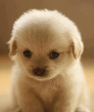

Schronisko Reksio i Klakier
Kategorie:
Wszystkie
Koty
Psy
Inne
Zwierzaki szukające domu

Azor
Azor to 4 miesięczny szczeniak porzucony przez poprzedniego właściciela.
Jest to piękny pies w kolorze beżowym i jego ulubioną zabawą jest gra w chowanego.
Rudy
Rudy to wspaniały kot typu dachowiec radośnie szukający swojego właściciela.
Ulubioną zabawą Rudego jest proszenie o jedzenie stojąc na łapkach oraz machając ogonem i miaucząc.